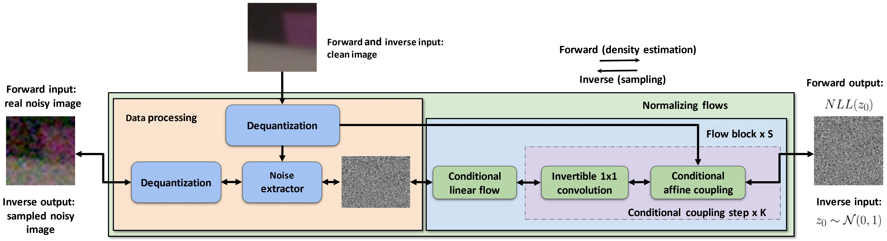

Modeling sRGB Camera Noise with Normalizing Flows

Abstract
Noise modeling and reduction are fundamental tasks in low-level computer vision. They are particularly important for smartphone cameras relying on small sensors that ex- hibit visually noticeable noise. There has recently been re- newed interest in using data-driven approaches to improve camera noise models via neural networks. These data- driven approaches target noise present in the raw-sensor image before it has been processed by the camera’s image signal processor (ISP). Modeling noise in the RAW-rgb do- main is useful for improving and testing the in-camera de- noising algorithm; however, there are situations where the camera’s ISP does not apply denoising or additional de- noising is desired when the RAW-rgb domain image is no longer available. In such cases, the sensor noise propa- gates through the ISP to the final rendered image encoded in standard RGB (sRGB). The nonlinear steps on the ISP culminate in a significantly more complex noise distribution in the sRGB domain and existing raw-domain noise models are unable to capture the sRGB noise distribution. We pro- pose a new sRGB-domain noise model based on normaliz- ing flows that is capable of learning the complex noise dis- tribution found in sRGB images under various ISO levels. Our normalizing flows-based approach outperforms other models by a large margin in noise modeling and synthesis tasks. We also show that image denoisers trained on noisy images synthesized with our noise model outperforms those trained with noise from baselines models.
Authors
Material
Citation
@inproceedings{Kousha2022ModelingsRGB,
author = {Shayan Kousha and Ali Maleky and Michael S. Brown and Marcus A. Brubaker},
title = {Modeling sRGB Camera Noise with Normalizing Flows},
booktitle = {CVPR},
year = {2022}
}